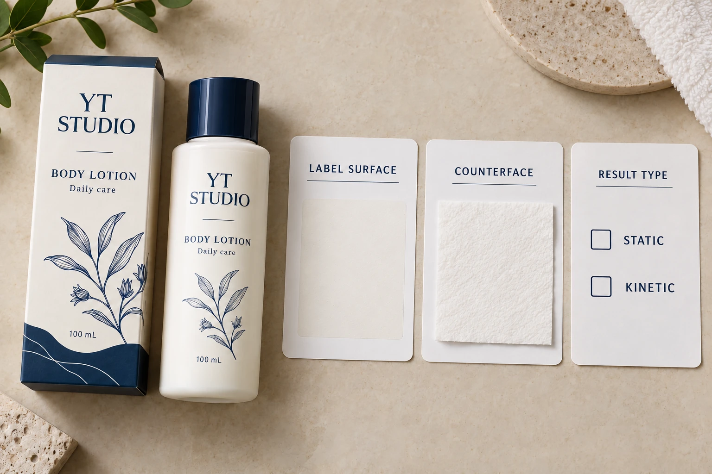

“Low friction” is incomplete as a cosmetic label requirement. Friction concerns a pair of contacting surfaces under stated conditions. Before comparing supplier figures, identify what touches the finished label and whether the decision concerns starting movement, continued sliding or another handling task.
That distinction helps a packaging engineer avoid purchasing a new finish on the basis of an unrelated coefficient. A matte appearance, a smooth feel and a reported friction value describe different things. The right question is whether the proposed evidence represents the contact that matters in the actual packaging route.
Describe the movement before requesting a number
Start with the event. Is a bottle meant to slide into a divider, remain stable against another surface or pass through an identified handling operation? Name the counterface, its relevant finish and the direction of contact. Ask the receiving team which part of the finished label actually meets it.
Record whether the concern is observed or only being planned for. If observed, preserve the sample identity and describe what happened without assigning a cause. A stalled movement, an unstable stack and a visible scuff are not interchangeable observations.
The dry-scuff review guide addresses changes to appearance after dry contact. Here the narrower decision is the friction evidence needed for movement or restraint. A surface can need review for both tasks, but one result should not silently stand in for the other.
Read the scope beside the coefficient
ASTM D1894's public scope distinguishes starting and sliding friction for plastic film and sheeting against itself or another substance under specified conditions. It also notes factors that can affect results. The public page does not provide the complete purchased procedure, and this guide does not claim to reproduce it.
If a supplier cites a method, ask for its version, actual material pair, sample preparation, relevant conditioning and reported result type. Ask the technical party whether that method addresses the intended label-handling question. A named standard is useful only when the supplied report can be connected to the actual task.
Do not set a universal coefficient for cosmetic labels from this article. Nor should a buyer compare a static value from one report with a kinetic value from another and choose the smaller number as though the reports were equivalent. Obtain a comparable interpretation from the competent testing party.
Identify the finished surface, not only the film family
Give the testing party the complete printed construction and relevant finish. A blank film sample, printed area, laminate and varnished area may represent different proposed contact surfaces. Identify which one will touch the counterface in the intended pack.
Ask how sample age, storage and relevant handling are accounted for in the proposed comparison. Record those facts rather than inventing a conditioning recipe. If a sample is merely an early appearance reference, say so; its usefulness for a friction decision needs technical confirmation.
Keep the counterface equally specific. A report against an unidentified reference surface cannot automatically approve contact with the brand's chosen divider. If that divider changes, ask whether the previous comparison still answers the question before treating the new pack as a routine reorder.
Use a contact-pair comparison record
This editorial record exposes missing comparison fields. It is not a laboratory procedure or equipment acceptance standard.
| Field | Required input | Decision supported |
|---|---|---|
| Handling task | Actual movement or restraint and process stage | Why friction is relevant |
| Label surface | Finished construction, printed area and sample ID | What is being purchased |
| Counterface | Actual contacting material and condition | Which surface pair is represented |
| Result type | Starting/static or sliding/kinetic, as applicable | Whether reports discuss the same property |
| Method and conditions | Technical party's named procedure and relevant preparation | Whether comparison is meaningful |
| Acceptance | Agreed task-based criterion and reviewer | What result permits the proposed use |
| Limits | Differences from the production pack | What remains unqualified |
First obtain the handling task and the two surface identities. Ask the technical parties to choose a suitable evaluation and agree what result would support the use. Compare the proposals on that basis, preserving reports and sample references. Record unsupported fields as unknown instead of filling them from another product's data sheet.
Stop a numerical comparison when the counterface, result type or method is missing. If the team only needs an agreed practical packaging comparison, describe that limited method honestly rather than presenting it as a standardized coefficient measurement.

Consider changing the contact arrangement too
Imagine a hypothetical packing task where an optional divider finish creates the unresolved movement question. The packaging team can compare a supported divider alternative alongside label-finish proposals. A more elaborate label coating is not automatically the proportionate correction.
Now imagine a fixed receiving operation whose contact material cannot change. That gives the technical review a narrower counterface and a reason to evaluate the actual finished-label options against it. Ask which sample and evidence represent that operation rather than choosing from a list ranked by an unexplained coefficient.
In either case, bring a proposed finish change back to the brand's appearance and other performance requirements. A friction decision does not approve color, gloss, oil contact or adhesion. The team should understand which requirement improved, which remains open and which needs rechecking after the change.
For a cosmetic label quotation discussion, provide container details, dimensions, quantity per design, complete finish references and the actual contacting surface. Include any reports with their method and result type. The form prepares a message; send records separately by email or WhatsApp. Ask for evidence that fits the contact pair, rather than a lower number without a task.